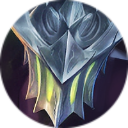

路西法 Argus
背景故事
黑暗天使 阿古斯（Argus）与他的妹妹拉斐拉（Rafaela）由母亲抚养长大。两个孩子都天生丽质、血统优良；然而在这片土地上，他受到的待遇却与妹妹截然不同。 颂扬、鲜花、荣耀与尊敬…… 阿古斯从未被接纳，自出生之日起便遭驱逐。这一切都源于那流传于黎明大陆的古老传说——传说天使皆为女性，更甚者，被光之主（Lord of Light）选中诞下天使之人，只能生出女婴。阿古斯的身份与来历，是被光明修道院（Monastery of Light）深埋的秘密，连阿古斯本人也无从知晓。 为了维护其正统，负责维系光明修道院合法性的圣职者（Sacrists）行动空前一致：他们推举拉斐拉作为直面众人的代表，而将阿古斯藏于阴影之中，永不能作为光明的代表，被剥夺了本应属于他的荣耀。 所有竭力维护这套扭曲正统的人都陷入两难：既担心阿古斯会长成一名弃儿，又觊觎他所拥有的力量。无一例外，每个人都渴望这位体内流淌着光之主血脉的年轻人能与妹妹融为一体，以抵御深渊（Abyss）之力。 事实上，阿古斯对光明的信仰坚如磐石，历经多年未曾动摇，正如他那老成的妹妹拉斐拉一般。他珍视她，至于他们二人谁沐浴在更多荣耀之中，他并不在意：对阿古斯而言，其意义永远不及守护正义重要。然而，兄妹之间始终存在一个分歧：他们对人类的态度。 随着黄金时代（Golden Era）的终结，一道骇人的深渊裂隙再次在黎明大陆裂开，黑暗能量自其深处汹涌而出。世人普遍认为这一切皆是深渊恶魔所为，拉斐拉也持此见，她将世间所有的灾祸都归咎于恶魔一族与深渊。阿古斯却不敢苟同。在他眼中，无尽的战争之所以复燃，罪在人类——正是他们的混乱与恶意为恶魔提供了可乘之机并加以利用。阿古斯对与人为伍的想法嗤之以鼻，对他们永远怀抱着刻骨的蔑视。 拉斐拉总是乐于宽恕那些误入歧途的人类，因为她相信他们能够改变，重新沐浴在光明之中。与之形成鲜明对比的是，阿古斯视这些人为无可救药的沉疴，是凡尘之树上须在玷污树干之前便修剪掉的枯叶。正是兄妹间的这般分歧，加剧了他人对他的恐惧。 一天，在战场上，阿古斯追击一群逃离他追杀的恶魔。妹妹曾劝他退兵，他却勇往直前。就在这时，他陷入了深渊恶魔的陷阱，遭其伏击，但他毫不畏惧。相反，他将这次伏击化为己用。 阿古斯心思之敏锐不亚于其体力之强悍，他借被俘深入敌营之机反将一军。他消灭了对方大批喽啰，既有恶魔，也有投靠他们的人类。在再次出发前，他决定将藏于该地的传奇魔剑偷走，可当他握住剑柄时，一连串奇异的记忆猛地涌入脑海—— 柔和的月光与花香轻抚着一对接吻的男女。但转瞬之间，她便被数名圣职者按住，强迫她饮下圣水。 从那日起，她便怀了身孕，肚子一天天隆起。随着身形渐丰，她的面容也愈发憔悴。她思念爱人，渴望往昔纯真的时光。在怀孕满三年方可诞下光之主之子的第三个年头，她终于再也承受不住，逃离光明修道院，投入失散已久的恋人怀中，两人一度生活幸福。可是好景不长。 这般幸福的满足总是太过短暂。圣职者追踪到了这对恋人，并将那男子就地斩杀：因为在正统看来，他玷污了光之主的神圣血脉。随后他们将女子带回修道院。 她被纯粹的绝望吞没，只求随爱人共赴黄泉。然而，每一次自尽都被迅速阻止。一年后，她因分娩的煎熬而死，却留下了一对双胞胎——一男一女。新生女婴从头到脚散发着圣洁的光辉，而男婴的眼睛却与他亡母的恋人惊人地相似。 圣职者准备结束男婴的性命。然而就在他们动手之际，男婴被妹妹散发出的光芒所笼罩，他们竟无法在他身上留下一丝伤痕。圣职者视之为神迹，而男婴拥有与妹妹同样强大的力量这一事实，更坚定了他们的这一信念。从此他们再未对